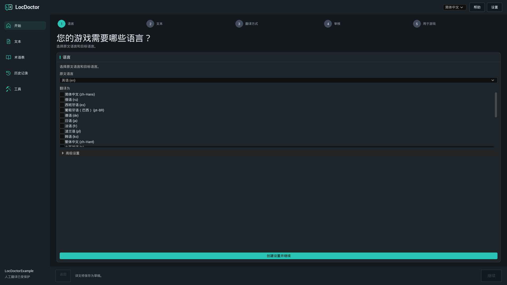
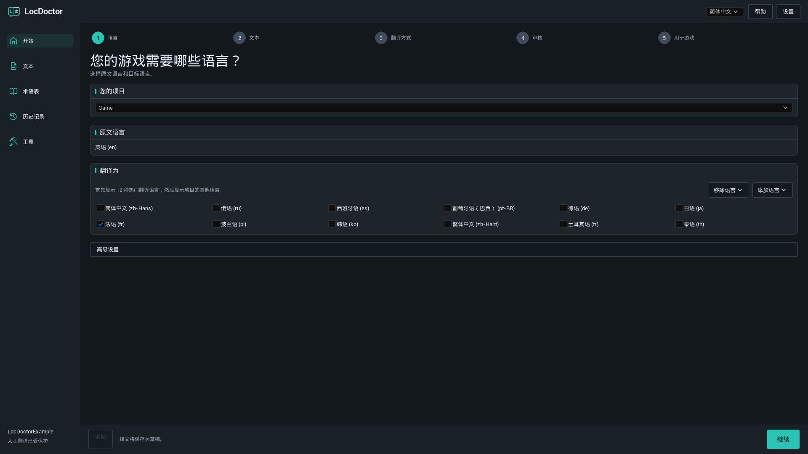
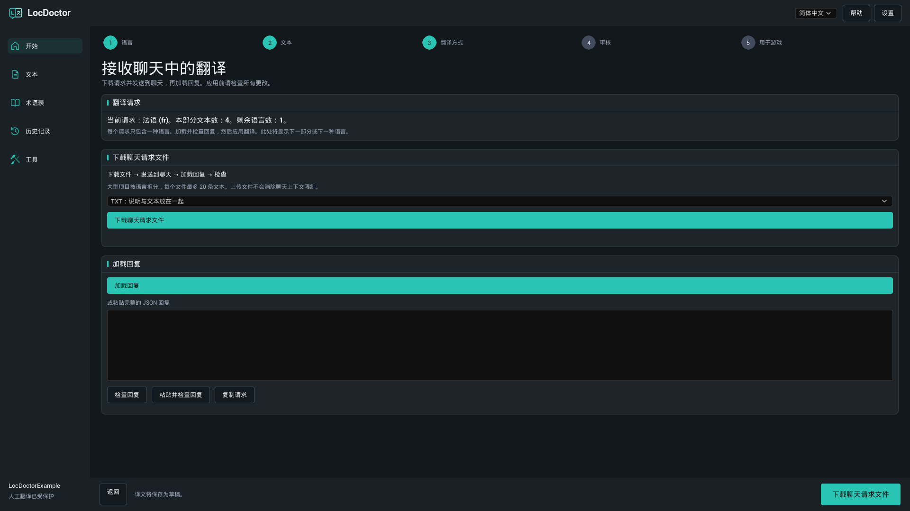
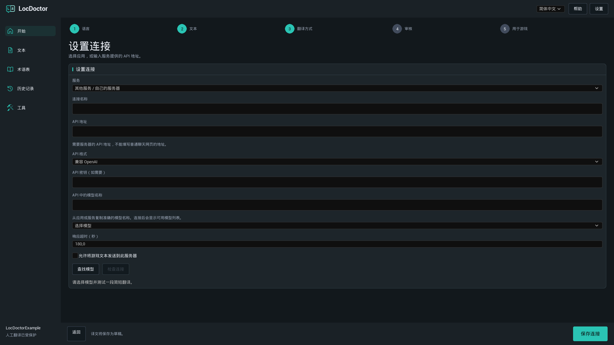
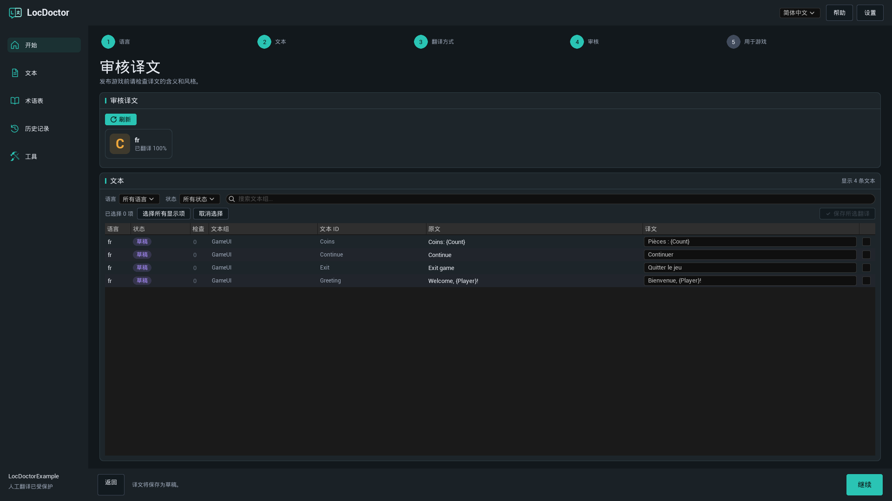
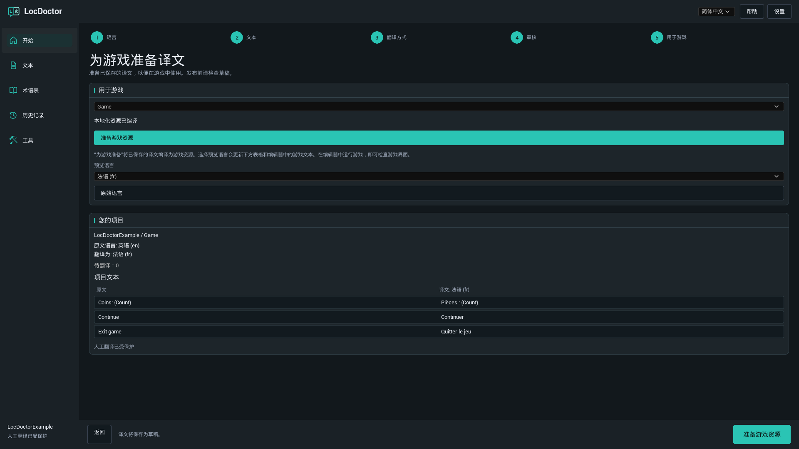

LOCDOCTOR 1.0.0 用户指南
翻译你的游戏。
掌握每个用词。
使用本地模型、自己的 AI 聊天工具或 API 服务翻译 Unreal Engine 游戏文本。在编辑器中审核结果，再为游戏准备翻译资源。
选择你已经具备的翻译方式
开始使用
安装
LocDoctor 1.0.0 支持在 64 位 Windows 上使用 Unreal Engine 5.7 和 5.8。请选择与引擎版本对应的安装包。
通过 Fab 安装
在 Epic Games Launcher 的 Fab 库中，为对应的引擎版本安装插件。打开项目，必要时在 Edit > Plugins 中启用 LocDoctor，然后重启编辑器。
从 ZIP 安装
- 关闭 Unreal Editor。
- 解压安装包，使
LocDoctor.uplugin直接位于<YourProject>/Plugins/LocDoctor/中。如果 ZIP 内已经包含LocDoctor文件夹，请将该文件夹放入Plugins。 - 打开项目。必要时在 Edit > Plugins 中启用 LocDoctor，然后重启编辑器。
- 打开 Tools > LocDoctor。
YourProject/
YourProject.uproject
Plugins/
LocDoctor/
LocDoctor.uplugin
Resources/
Source/包含编译文件的安装包也包含 Binaries 文件夹。如果使用仅含源码的安装包，Unreal 需要兼容的 C++ 编译工具来构建编辑器模块。
开始使用
第一次翻译
建议先选择一种语言和少量游戏文本。本指南中的插件按钮名称与文档语言一致。Unreal Editor 自身的菜单名称使用英文表示。
- 选择语言。打开 Tools > LocDoctor。选择游戏原始文本的语言，以及至少一种翻译目标语言。首次使用时，点击 创建设置并继续。除非项目需要其他资源文件夹或本地化目标，否则保留默认高级设置。
- 收集文本。在 文本 步骤点击 收集文本。如果 Unreal 提示保存已修改的游戏资源，请先保存。检查项目摘要中是否出现了预期的文本。
- 选择翻译方式。使用 在我的电脑上、在我的聊天中 或 通过 API。自动翻译需要先选择模型并点击 检查连接，完成一次简短的测试翻译。测试成功后，主按钮会变为 翻译文本。
- 审核结果。AI 翻译会保存为草稿。在 审核 步骤逐条阅读，必要时修改，然后保存选中的翻译。
- 准备游戏。在 用于游戏 中点击 准备游戏资源。测试游戏的每种语言，并在 打包设置 中加入这些语言。

语言与游戏文本
原文语言、翻译语言与界面语言
- 原文语言：游戏原始文本所使用的语言。
- 翻译为：当前翻译任务处理的语言。取消勾选即可将该语言排除在本次任务之外。
- 界面语言：LocDoctor 顶部的语言选择器，只改变插件界面。默认使用英语。
本地化目标通常名为 Game，用于配置一组文本的 Unreal 本地化设置。如果项目有多个目标，请选择需要翻译的目标。
添加或移除语言

最先推荐的是 12 种常用翻译语言。点击 添加语言，按名称或 Unreal 语言区域代码查找其他语言。移除语言 会从目标配置中移除语言，但保留已保存的翻译文件，以便之后重新添加该语言。
哪些文本可以翻译？
LocDoctor 处理 Unreal 本地化系统收集的可本地化 FText 和 String Tables。普通 FString 值，以及标记为 culture invariant 的文本不会自动本地化。可以在 工具 > 项目检查 中查找这些情况。
翻译方式
在我的电脑上
通过电脑上运行的应用使用已下载的文本模型。LocDoctor 连接该应用的 API 服务器。插件不会安装应用或下载模型。
- 安装你选择的模型应用。下载支持所需语言、并且能在电脑可用内存中运行的文本生成模型。
- 启动应用并启用本地 API 服务器。翻译时保持应用运行。
- 在 LocDoctor 中选择 在我的电脑上，然后点击 选择模型。点击 查找模型 可刷新列表。
- 选择模型。如果测试尚未开始，点击 检查连接，等待简短的测试翻译完成。
- 连接就绪后，点击 翻译文本。
设置本地应用
| 应用 | 需要启动的功能 | 默认 API 地址 |
|---|---|---|
| Ollama | 打开 Ollama，并准备一个已下载的本地文本模型。本地服务器通常随应用启动。 | http://127.0.0.1:11434 |
| LM Studio | 打开 Developer 并启动 API 服务器。为服务器提供可用的文本模型。 | http://127.0.0.1:1234/v1 |
| Jan | 打开 Settings > Local API Server 并启动服务器。如果需要密钥，请在 LocDoctor 中填写同一密钥。 | http://127.0.0.1:1337/v1LocDoctor 也会检查端口 6767。 |
| GPT4All | 打开 Settings > Application > Advanced 并启用 Local API Server，然后加载文本模型。 | http://127.0.0.1:4891/v1 |
如果更改过端口，请使用应用显示的地址。LocDoctor 向本地服务器获取模型列表，并检查已保存的本地连接。无需扫描磁盘或提供安装文件夹。
官方设置指南：OllamaLM StudioJanGPT4All
其他应用或自定义端口
在连接设置中选择 其他应用 或 其他服务 / 自己的服务器。填写 API 地址，选择 Ollama 或 兼容 OpenAI 作为 API 格式，并输入准确的模型名称。llama.cpp、LocalAI 和 vLLM 等服务器的接口支持所选格式时，也可以连接。
翻译方式
在我的聊天中
使用支持粘贴文本或上传附件的 AI 聊天工具。由你发送请求，再将回复导入 LocDoctor。此方式不需要 API 密钥。
- 选择 在我的聊天中。通过 当前请求 或 第一个请求 查看当前请求的语言和分段。
- 点击 下载聊天请求文件。首次尝试建议选择 TXT：说明与文本放在一起。
- 在 AI 聊天中上传文件。要求它遵循文件中的说明，返回包含所有指定翻译的完整回复。
- 点击 加载回复 导入回复文件。也可以将完整 JSON 回复粘贴到回复框，再点击 检查回复，或使用 粘贴并检查回复。
- 阅读预览。如果所有检查通过，点击 应用译文。翻译会保存为草稿。
- 下载或复制下一个请求，重复上述操作，直到没有待处理请求。然后审核翻译。
应该选择哪种文件格式？

| 格式 | 适用情况 | 需要上传的文件 |
|---|---|---|
| TXT | 最简单的首次尝试。 | 包含说明和文本的单个文件。 |
| JSON | 适合处理结构化数据的聊天工具或程序。 | 包含说明的 JSON 请求文件。 |
| CSV | 需要查看或分享的表格。 | CSV 文件及单独的说明文件。 |
回复可以是 JSON 文件、包含完整 JSON 回复的 TXT 文件，或带有 batch、culture、i 和 t 列的 CSV 文件。如果聊天工具不支持附件，可使用 复制请求。发送文件并不会取消聊天工具的上下文长度或上传限制。
回复检查会验证什么？
LocDoctor 检查请求标识符、语言、文本标识符和格式占位符。每个请求项必须且只能出现一次。游戏文本和术语表仍需与导出的请求一致。
如果导出后修改了原文、翻译或术语表，请创建新请求。如果回复不完整或改动了占位符，请让聊天工具修正。当前请求保存在项目本地，因此重新打开编辑器后可以继续处理。
翻译方式
通过 API
LocDoctor 会自动向配置的服务发送翻译请求。在该服务的账户页面创建 API 密钥，开始前确认模型是否可用及其计费规则。
- 选择 通过 API，然后选择 OpenRouter、OpenAI、Google Gemini 或 Groq 等服务预设。
- 打开 高级设置，填写 API 密钥（如需要）。使用自定义服务时，选择 其他服务 / 自己的服务器，根据服务文档填写 API 地址和格式。
- 点击 查找模型 并选择模型。如果服务不提供模型列表，请填写准确的 API 中的模型名称。
- 连接本机以外的服务器时，启用 允许将游戏文本发送到此服务器。
- 点击 检查连接 并等待简短的测试翻译。测试成功后，点击 翻译文本。
连接自定义服务

| 字段 | 填写内容 |
|---|---|
| 连接名称 | 一个便于识别的名称，例如“团队翻译服务器”。 |
| API 地址 | 服务文档中的 API 基础地址，例如 https://openrouter.ai/api/v1。聊天网站的网址不能用于此处。 |
| API 格式 | 兼容的 Chat Completions 接口选择兼容 OpenAI；Ollama 接口选择 Ollama。尚不支持的 API 格式需要单独集成。 |
| API 密钥 | 服务或服务器要求时，填写其提供的密钥。 |
| API 中的模型名称 | 服务器要求的准确模型标识符，可能与网站上的显示名称不同。 |
| 响应超时（秒） | 1 到 600 之间的值。模型或服务器较慢时可增大。 |
API 密钥保存在项目 Saved/Config 文件夹下的本地用户设置中。设置文件不加密。密钥不会包含在 LocDoctor 的聊天请求文件、翻译历史记录或报告中。
审核与发布
审核翻译
AI 翻译最初保存为 草稿。自动检查帮助保留格式，但你仍需审核含义、语气和上下文。
- 打开 审核 步骤或 文本 页面。必要时点击 刷新。
- 使用语言和状态筛选器缩小列表范围。引导式审核只显示所选的翻译语言。
- 对照原文和译文，必要时修改翻译框。检查名称、术语、占位符、换行和已报告的问题。
- 选择需要保存的行，然后点击 保存所选翻译。
- 发布前，在游戏中检查翻译后的界面。
| 状态 | 含义 |
|---|---|
| 未翻译 | 此文本在该语言下尚无已保存的翻译。 |
| 草稿 | AI 翻译已保存，等待审核。 |
| 已审核 | 翻译已标记为审核通过。 |
| 人工翻译 | 人工翻译受到保护，不会被常规自动翻译替换。 |
| 过时的翻译 | 原文在翻译后发生了变化。请与当前原文对照检查。 |
理解进度计数

进度按“文本与语言”的组合计数。一条原文翻译为四种语言，就是四项翻译任务。已处理 表示已处理的任务数量。请查看已保存的结果及错误信息，确认哪些任务成功完成。
停止自动翻译会保留已经完成的结果。存在可用的已保存任务时，可以继续未完成的工作。常规自动翻译任务会保护已有的人工翻译。
格式占位符
保留 {Player}、{Count} 等变量、Rich Text 标签和换行。聊天请求可能把格式替换为 ⟦LD0⟧ 等受保护标记；模型必须逐字复制这些标记。应用有效回复时，LocDoctor 会恢复原始格式。
复杂的复数和性别表达式需要人工审核。请翻译每个分支内的文本，保留表达式结构。
术语表与历史记录
统一术语用法
- 打开 术语表，点击 添加。
- 输入术语。需要保留名称时选择 不翻译；需要指定准确译法时选择 指定译法。
- 为需要的语言填写翻译，并根据需要启用区分大小写。
- 准备新请求前，点击 保存。
例如，保留角色名字，或为某个游戏术语指定各语言的统一译法。术语表会加入新翻译请求。修改术语表可能使已经导出的聊天请求失效。
恢复以前的修改
打开 历史记录，按目标、语言和时间找到已保存的批次，然后点击 恢复。恢复旧数据前，LocDoctor 会检查是否有更新的修改。如有冲突，请先检查这些修改。
如果写入中断，下次打开时可能出现 恢复中断的更改。使用 恢复 恢复已备份的原始文件，再继续操作。
审核与发布
准备游戏资源
此步骤将已保存的翻译编译成 Unreal 本地化资源。最终游戏使用这些资源。发布的游戏不会运行 LocDoctor 的编辑器界面。
- 先完成准备发布的翻译审核。
- 打开 用于游戏，选择本地化目标并点击 准备游戏资源。等待显示 本地化资源已编译。
- 选择 预览语言，更新项目文本示例和编辑器中的本地化游戏文本。在编辑器中运行游戏，检查各个界面。
- 点击 原始语言 结束预览。
- 打开 Project Settings > Packaging > Localizations to Package，加入准备发布的所有语言。确认项目国际化设置包含这些语言的数据，然后测试打包后的游戏。
保存新翻译后，请重新编译。如果某种语言在编辑器中正常、在打包游戏中却缺失，请检查是否包含对应的本地化资源和语言区域数据。

如果字符缺失或显示为方框，请打开 工具 > 字体，检查游戏的字体资源及该语言的回退字体。
工具与文件交换
项目检查
打开 工具 > 项目检查 并运行检查。查看报告位置，排查可能阻碍本地化的硬编码字符串、culture invariant 文本、冲突的键或由片段拼接的句子。首次检查期间 Unreal 需要加载资源，可能耗时较长。
字体
打开 工具 > 字体，检查所选游戏字体是否包含翻译所需字符。查看缺失字符与未完成的检查，再到真实游戏界面中验证。
与译者协作
打开 工具 > 导入与导出，通过 CSV 或 PO 文件交换翻译。
- 以所需格式导出选中的目标和语言。
- 译者应只修改译文，保留文本标识符、原文和占位符。
- 导入返回的文件，审核待应用的修改。
- 使用 保留项目翻译 或 使用文件翻译 处理冲突，然后点击 保存导入的翻译。
聊天请求 CSV 和译者交换 CSV 用于不同流程。聊天回复应通过 在我的聊天中 > 加载回复 导入。本版本不支持 XLSX 和 XLIFF 文件。
问题排查
Tools 菜单中找不到 LocDoctor
在 Edit > Plugins 中搜索并启用 LocDoctor，然后重启编辑器。如果插件列表中也没有，请检查安装文件夹，以及安装包是否对应引擎版本。仅含源码的安装包需要安装兼容 Unreal 的 C++ 编译工具，并构建编辑器目标。
没有收集到文本
保存游戏资源，检查目标的收集文件夹，然后重新收集。文本必须是可本地化 FText 或 String Tables，并包含在 Unreal 的文本收集配置中。运行 工具 > 项目检查，检查硬编码或不可本地化的字符串。
无法开始翻译文本
选择至少一种翻译语言并收集文本。自动翻译需先选择模型，完成 检查连接。如果没有待翻译文本，可在 文本 中修改已有翻译，或收集新文本并选择其他语言。
本地模型列表为空
保持模型应用运行，启用其本地 API 服务器，并安装或加载文本生成模型。检查 API 地址和端口。自定义服务器需要在高级设置中填写准确的模型名。应用已经安装，不代表 API 服务器已经启动。
连接检查超时
等待本地模型加载，关闭占用显存的其他应用，或换用较小模型。增大 响应超时（秒）。如果服务器完全没有响应，请检查地址、端口，以及系统代理是否重定向了 localhost 请求。
API 返回 401 或 403
检查密钥是否属于所选服务、是否有效，以及是否有权使用模型。本地服务器启用认证时，请使用该应用 API 服务器设置中的密钥。
API 返回 429 或模型错误
稍后重试，或选择其他可用模型。检查服务的账户限额和模型可用性。成功获取模型列表并不保证服务能够生成翻译。
聊天请求只包含一种已选语言
这是正常行为。每个请求包含一种语言和最多 20 条文本。加载、检查并应用回复后，再准备下一个请求。文件操作控件上方会显示当前或下一种语言。
聊天回复被拒绝
使用当前请求对应的完整回复。要求聊天工具让每个指定项出现且只出现一次，保持 batch 和 culture 不变，并保留所有占位符。如果导出后修改过项目文本或术语表，请创建新请求。
改变预览语言后游戏没有变化
保存翻译后，先点击 准备游戏资源。确认所选目标包含该预览语言的翻译。预览影响的是本地化游戏文本，不是 Unreal Editor 菜单。普通字符串和未收集的文本不会改变。
打包游戏中缺少某种语言
编译最新保存的翻译。在 Project Settings > Packaging > Localizations to Package 中加入该语言，并在国际化设置中包含对应的语言区域数据。重新打包后测试。
翻译后的字符显示为方框
检查游戏字体及该语言的回退字体。使用 工具 > 字体 检查字符覆盖情况，然后测试真实游戏控件与界面。
常见问题
需要付费 AI 订阅吗？
LocDoctor 不包含订阅。你可以使用本地模型、自己的聊天账户或服务的 API 权限。可用性、使用限额及费用取决于选择的应用或服务。
本地翻译可以离线使用吗？
可以，前提是模型已经下载并在本地运行。安装应用和下载模型时可能需要联网。云端模型仍会连接其服务提供方，即使应用本身运行在本机。
LocDoctor 能翻译图片、语音或视频字幕吗？
它翻译 Unreal 收集的可本地化游戏文本。图片中的文字、音频和视频字幕需要各自的原始文本及单独的内容处理流程。
移除语言会删除已有翻译吗？
不会。移除语言 将语言移出目标配置，保留翻译文件。取消勾选只是将该语言排除在当前任务之外。
支持哪些界面语言？
英语、俄语、德语、法语、西班牙语、巴西葡萄牙语、简体中文、日语和韩语。游戏的翻译目标语言单独设置。
发布后的游戏需要 LocDoctor 或 AI 连接吗？
插件用于 Unreal Editor。最终游戏使用 Unreal 编译出的本地化资源，游玩时不需要翻译模型或翻译服务。
版本与支持
本指南适用于 LocDoctor 1.0.0，支持 64 位 Windows 上的 Unreal Engine 5.7 和 5.8。
1.0.0
通过本地模型、聊天文件和兼容 API 翻译游戏文本。提供语言设置、草稿审核、术语表、历史记录、本地化编译、项目检查、字体检查及 CSV / PO 交换。
报告问题
联系支持：nexusforgeuesupport@gmail.com。
提供 Unreal Engine 和 LocDoctor 版本、翻译方式及完整错误信息。连接问题还需提供应用或服务名称和模型名称。完整尺寸的截图有助于说明当前步骤。
分享截图或日志前，请移除 API 密钥及其他私人信息。